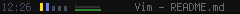

TTWM: Tiny Tiler WM / Tabbed Tiler WM
- Tiny and Tabbed!
TTWM is a minimal tiling window manager combining concepts or elements from TinyWM, DWM, and i3wm. Inspiration has also been drawn from other great tilers like MonsertWM. TinyTiler is currently under 500 lines of code. In contrast to other tilers, TinyTiler does not have modes nor does have window rules. TinyTiler has only two layouts: right stack and bottom stack. These choices were by design. TinyTiler instead provides two screen sections, the master and the stack. In TinyTiler only one stack window is visibile at a time, the others have tabs in the statusbar.
History and motivation
I had been happily using dwm for some time when I first tried i3. I loved i3's tabbed mode in a container. I would always have one window open on the left half of my screen, then have several others in a tabbed container on the right. I loved that I could shift windows in and out of the container into the "master" region and that I could scroll focus through the tabbed windows and the window in the other container with a single binding of Mod+direction.
I faced three challenges with i3 though. First and foremost I couldn't get a decent customization for my netbook. These problems are outside the scope of this readme, but in the end I wasn't pleased with it on my netbook which is my most often used computer. Because of this I was using i3 on my desktop and dwm on my netbook, but I began forcing dwm into an i3-like form by opening two terminals side by side. In the one on the right I would use urxvt tabs or tmux. This produced a similar effect as an i3 tabbed container, but had three drawbacks: There was no way to move windows in and out of this "container" or swap them with the other window; I had to switch between two sets of keybindings, one for tmux, one for dwm; and my "tabbed container" could only have terminal windows.
My second concern with i3 was that, while I do like having a status bar for a few bits, of information (see status bar discussion below) most of the bar space was empty or wasted; meanwhile an i3 tabbed container used yet another line for all the tabbed window names. Finally, i3, while reasonably streamlined, is much larger than dwm. I didn't feel like I could dive into the source code and get comfortable enough to make changes confidently.
These concerns and desires drove me to try my hand at making my own window manager. Initially I planned to base it on dwm and only make a few changes. But as I proceeded I found myself bogged down in functions and data structures that were no longer relevant. I was spending more time pruning and deleting that creating anything new. I scrapped this approach and instead started with TinyWM as a base. If you know what you are looking for you will find nearly all of TinyWM's code still in tact at the heart of TinyTiler ... all ~42 lines of it! TinyTiler, however, is a very different creature. Several bits of code were still borrowed from dwm.
In Summary: TinyTiler is a direct descendent of TinyWM, with some code borrowed from dwm and other code ideas inspired by dwm, and based on a tab concept from i3.
Why two panels?
In my use of a handful of Tilers, I have found that I rarely want to see more than two windows at a time. Ratpoison users, or users of other fullscreen WMs, often point out that one rarely is paying attention to more than one window at a time: if you need to see another window, switch to that window in fullscreen. In contrast, I find myself often wanting to see two windows ... but never more than two.
When working on papers or publications, I'll have one window open editting the LaTeX document, while I'll have another window next to this with either the results of a recent statistical analysis I am writing about, or perhaps an email from a collaborator whose feedback I want to be sure to encorporate into the text. Alternately, I may be analyzing data or editing code while glancing at a man/info page, or an example on a website on how to use one of those rarely used functions. I may also be running a data analysis in one window while viewing a graph or plot of that data in the other.
In other words I do often want to see two windows at a time, but rarely three. Other windows can be hidden in the stack until I need them or until I switch to work on another task.
TinyTiler's status bar
TinyTiler has a built in status bar. Below are two images with the default settings.
Left side of bar:

Right side of bar:
Starting from the left, you'll see a clock. Next are some vertical rectangles - these are your workspace indicators. An empty workspace is shorter and light grey. An occupied workspace is full height and blue, and the focused workspace is full height and yellow. Note that all colors can be customized in the config.h file.
To the right of the workspace indicators are three system monitor bars. While it can be fun to have a variety of system monitors, the only ones I've ever had any practical use for are CPU use, audio volume, and battery status; so these are the three that TTWM monitors. The top bar is for CPU use (near zero in this image). The middle is the audio volume setting. On the bottom is the battery status. These all indicate a percent and have customizable colors for warning (high cpu, low battery), alert (very high cpu, very low battery), full status for volume and battery, and charging status for the battery.
To the right of the status bars is the title of the window currently in the master panel. This has two colors, one for when this is the focused window, another for when it is unfocused.
The right half of the status bar begins with a row of tabs. There is a tab for each window in the stack panel. There is a blue indicator for the window that is currently on the top of the stack, and a yellow indicator if that is the currently focued window. To the right of the tabs is the title of the window on the top of the stack also colored to indicate focus. note: see below for the future development of these tabs.
The volume script
Under construction check back later, or just have a look at the script, it may be self explanatory. Just note that ttwm's statusbar function looks for the ".audio_volume" file in the location specified in config.h.
What about floating and fullscreen modes?
TinyTiler does not, and will not have complext layouts, modes, nor window rules. If this is what you want, you do not want ttwm.
However there are transient states for floating and fullscreen windows. The former is a convenient and entirely accidental byproduct of ttwm's TinyWM heritage. I've kept TinyWM's window moving and resizing mouse events. These allow for any window to be moved or resized by holding the MOD key and using buttons 1 or 3 (move or resize). There is, however, no floating variable. Such a window will remain in it's moved/resized state until there is a call to the window stacking function, at which time it will be put back into the normal tiling position.
The fullscreen command works similarly. When given the fullscreen command, the active window will be expanded to fit the screen and cover the status bar. Here it is perfectly reasonable for this to be a transient state: as soon as you have reason to switch workspaces or switch focus to another window, you no longer need the current window in fullscreen. It is similarly restacked as normal. Toggling fullscreen in fact only either fits a window to the screen, or just calls the stack window function.
Recommended usage
Be sure to change USERNAME in config.h to your username and chose a font in the font string. Currently TTWM does not have much error checking, if the font in the font string can't be found do not expect ttwm to function properly.
Launch ttwm from ~/.xinitrc:
xsetroot -solid "#040408" -cursor_name left_ptr
exec ttwm
#or exec dbus-launch --exit-with-session ttwm
Development directions
Implement move-client-to-workspace function.Squash the known bug from windows closing in workspaces other than the currently focused workspace.- Fixed: clients closing on non-focused workspace works.
- Implemented move to workspace function.
- Streamline code, remove some old kludges, and improve stability by addressing bug reports. This will be my main focus over the coming months.
- Consider what to do with tabs. Initially the colored blocks that serve as tabs know were intended as placeholders while I worked on all the window management aspects. I planned on going back to them to make them more tab-like (think i3wm's tabbed containers) with each window name being displayed in a tab that chagned size depending on the number of tabs present. That was the plan, and it would be reasonably easy to implement ... but I really like how these placeholders look. They may just make it to the finished product. I'd like community feedback on this decision, if you start using ttwm, let me know if you like these block-tabs, or if you want title-bar style tabs and I'll consider maintaining one branch with each. This branch will not happen, however, until the current code has been cleaned up and proven stable.
- Implement multi-monitor support. This will never be a very high priority for me, but I consider it worth implementing when convenient. The first step, which I do consider important, will be to ensure ttwm can handle a resolution change to be able to switch to an external display or projector. Currently, even this will fail. Whether ttwm will ever fully take advantage of muti-monitors to have different workspaces on multiple monitors is, however, uncertain - community feedback would certainly be given strong consideration here. I don't want to add variables and data structures and lines of code for a feature that wouldn't be used.
Why two names?
Because I'm indecisive.
But, I am also concerned over the name conflict with another "ttwm" on github which is a Tiling Tabbed Window Manager written in python. While I can't find a convenient way to avoid the acronym collision I can avoid a conflicting name by either calling my project Tabbed Tiler WM (instead of tiling tabbed), or more explicitly differentiating the two projects by refering to mine as Tiny Tiler WM.
Call it what you wish. It's tiny, and it's tabbed, and it tiles. But no, I don't want to consider tttwm.